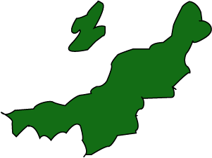
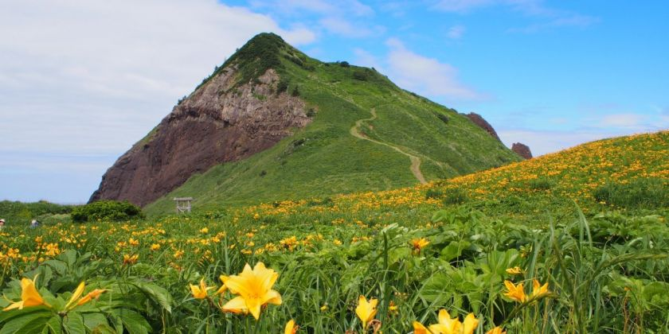

A wide array of ski and hot spring resorts including the popular Echigo-Yuzawa,
the picturesque terraced rice fields of Hoshitoge, excellent rice and sake, one
of Japan’s top three fireworks displays at Nagaoka, one of Japan’s top three cherry
blossom night views at Takada Park and an abundance of nature and a mining heritage
on Sado Island
(Source: Niigata Official Travel Guide)
Prefecture Image
Hoshitoge Rice Terraces
Exploring Niigata
Tobishima Liquorice Flowers at Onogame
